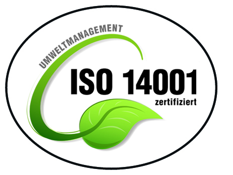

Startseite – Ein Überblick
MediShop24 – Ihr digitaler Partner für Praxismöbel
MediShop24 ist ein auf den Gesundheitsbereich spezialisierter Online-Fachhändler. Über unseren Webshop bestellen Arztpraxen, Kliniken und Pflegeeinrichtungen moderne Sitzmöbel und Ausstattung für Wartezimmer und Aufenthaltsbereiche.
Für wen ist ComfortLine 3000 gedacht?
- für Arztpraxen, MVZs und Kliniken mit regelmäßigem Patientenaufkommen
Auf einen Blick
Weitere Informationen zu Produktionsbedingungen, Materialien und Zertifizierungen stellt MediShop24 auf Anfrage gerne zur Verfügung.
Unser Modell auf einen Blick
Das steckt im ComfortLine 3000
➡️ Stapelbarer Wartezimmerstuhl mit stabilem Metallgestell ➡️ Pflegeleichter Bezug ➡️ Farben: Grau, Blau, Anthrazit ➡️ Herstellung in Europa
Unsere Verarbeitung im Überblick
-
➡️ Kratzfeste Pulverbeschichtung
➡️ Bequeme, mehrschichtige Polsterung
➡️ Für den täglichen Einsatz geeignet
➡️ 2 Jahre Herstellergarantie
Ihr Weg zur Bestellung
- Bestellung direkt über den Webshop oder per Angebotsanfrage
- digitale Auftragsbestätigung mit voraussichtlichem Liefertermin
- persönliche Beratung per Telefon oder Video-Call nach Terminvereinbarung möglich
Unser Umgang mit Materialien
ComfortLine 3000 – durchdacht für Umwelt & Praxisalltag
Wir sind nach ISO 14001 zertifiziert, dem internationalen Standard für effektives Umweltmanagement und nachhaltigen Umweltschutz im Unternehmen. .
Material & Produktion
- Fertigung in europäischen Partnerwerken mit klaren Qualitätsstandards
- Rahmenbeschichtung mit lösemittelarmen Pulverlacken
- Auswahl langlebiger Polstermaterialien zur Verlängerung der Nutzungsdauer
- Bezugsmaterial optional mit OEKO-TEX® Standard 100 zertifiziert (auf Anfrage)
Verpackung & Transport
- Einsatz von recyclingfähigen Kartonagen und reduzierten Füllmaterialien
- Bündelung von Lieferungen, um Transportwege effizient zu nutzen
- Kooperation mit Versanddienstleistern, die Klimaschutzoptionen anbieten
- klare Kennzeichnung der Verpackungen zur einfachen Entsorgung
Detaillierte Informationen zu Produktionsbedingungen und eingesetzten Materialien stellt MediShop24 auf Anfrage projektbezogen zur Verfügung.
Langlebigkeit als zentraler Ansatz
- stabile Konstruktion für den Dauereinsatz in Wartezonen
- möglichst seltene Ersatzbeschaffungen durch robustes Design
- Ersatzgleiter und einzelne Komponenten sind nachbestellbar
Ein langlebiger Stuhl verursacht über die gesamte Nutzungsdauer weniger Ressourcenverbrauch als häufige Neuanschaffungen.
Transparenz auf Anfrage
Für Einrichtungen mit besonderem Fokus auf Nachhaltigkeit bietet MediShop24 zusätzliche Informationen an:
- Produktdatenblätter mit Angabe der wesentlichen Materialien
- Informationen zu relevanten Umweltzertifikaten der Lieferpartner
- Hinweise zum sachgerechten Umgang am Ende der Nutzungsdauer
So können Sie Nachhaltigkeitsaspekte bei der Beschaffung gezielt berücksichtigen und dokumentieren.
Erfahrungen aus der Praxis (Auszug)
Die hier angezeigten Bewertungen dienen als Beispiel für Rückmeldungen zu ComfortLine 3000 auf verschiedenen Online-Plattformen.